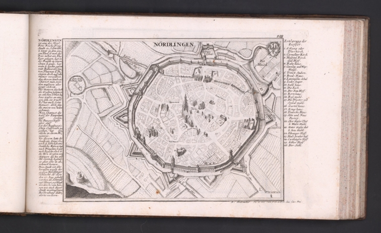
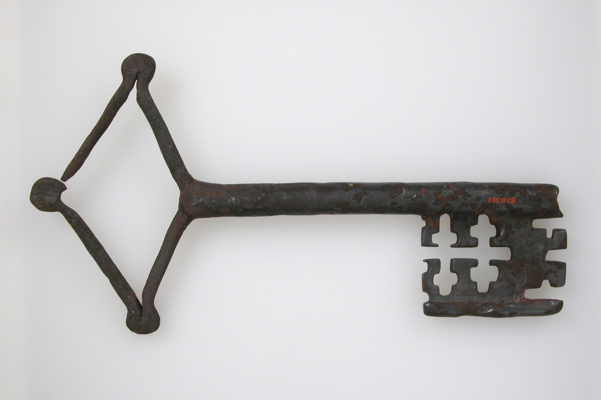
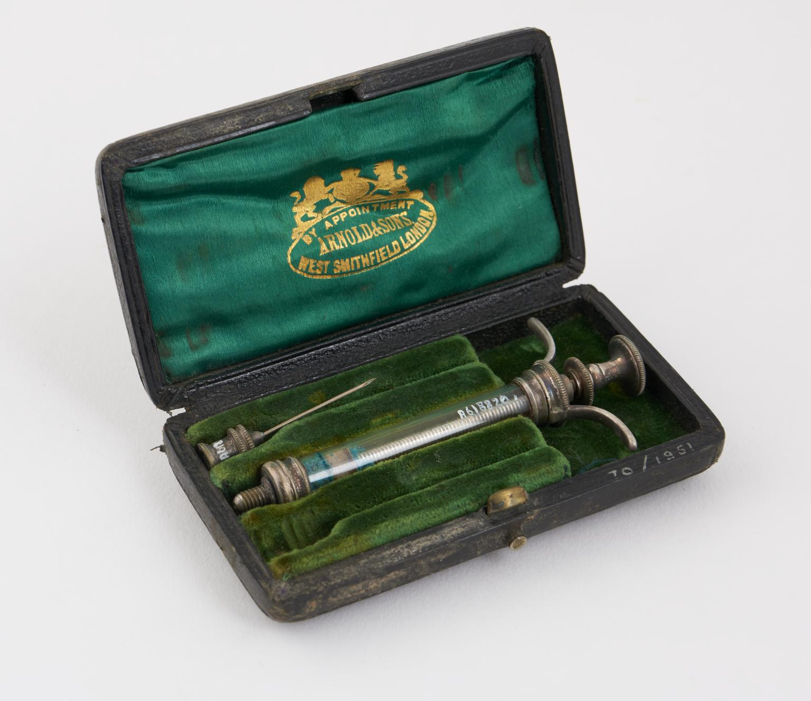
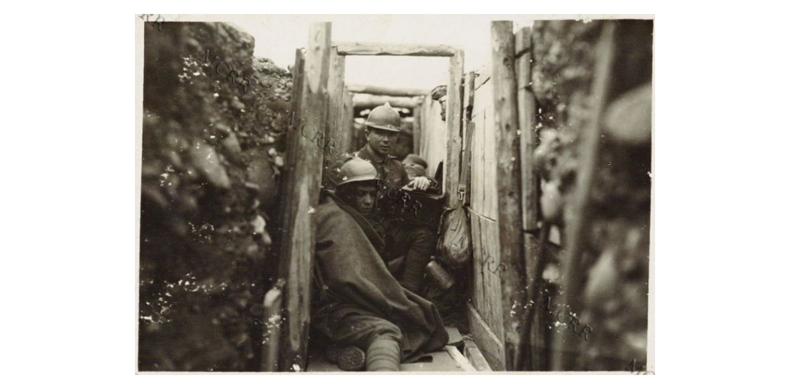
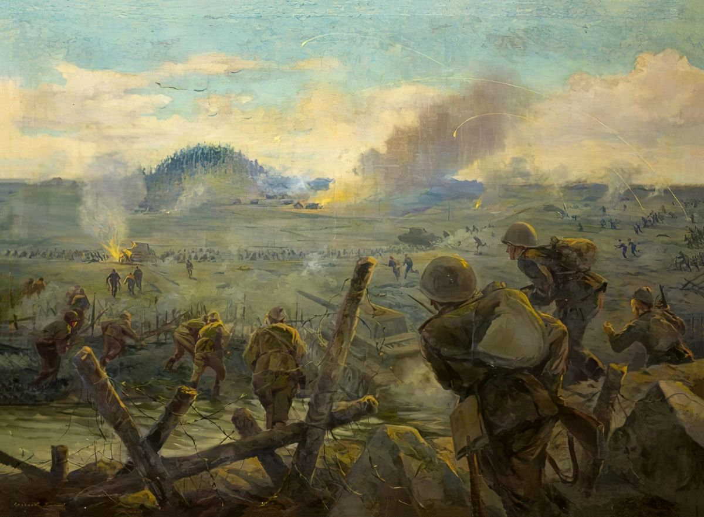
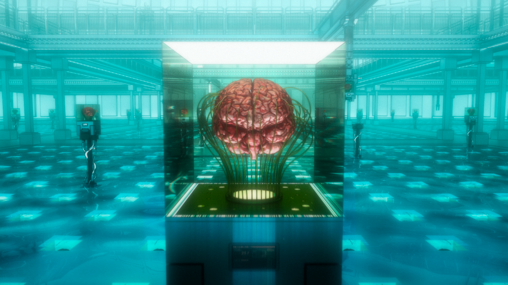

"Offer your heart!"
『心臓を捧げよ！』
Attack on Titan is a manga created by Hajime Isayama. First published in Japan in the autumn of 2009 and completed with its last chapter — no. 139 — in April 2021, for years the journey of the three main characters and their friends, as well as the intricate and complex storyline of this world has impacted people from all over the world and continues to have a incredible influence to this day. In a dystopian reality where humanity has been segregated between walls and the outside world seems like a distant dream of escape and possibilities ruined by the presence of Titans, human-shaped creatures who actively decimated the population and still do, follow the journey of Eren, Mikasa and Armin, three young kids who’s life took a life-changing turn on a random sunny day.
Chapter 1 - The collection
Explore the collection of items we have researched to inspire a real-life manifestation of symbols and objects you can find in Attack on Titan.
E.N.: read and pan over the items from right to left for a manga-style reading experience






Browse the entire collection here or by going in the Collection page through the navbar.
Chapter 2 - The themes
This is only the beginning of your journey on this website. whether you know of attack on titan or not, do you ever wonder how things would "look" like if they were represented in different times and periods? well, we tried to give this question an answer by selecting themes of different aesthetics for this exhibition, click on one of the buttons below to choose one.




Chapter 3 - The narratives
Dive into the world of Attack on Titan through different narratives that explore various aspects of the story, characters, and themes. Choose a narrative to experience a unique perspective:
.accordion-body, though the transition does limit overflow.
.accordion-body, though the transition does limit overflow.
.accordion-body, though the transition does limit overflow.
Epilogue - The Team
Learn more about the contributors of this project here or check out their profiles on GitHub.